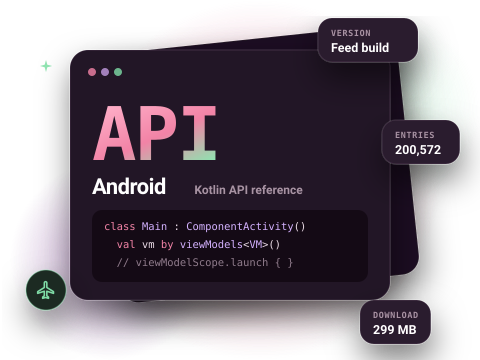
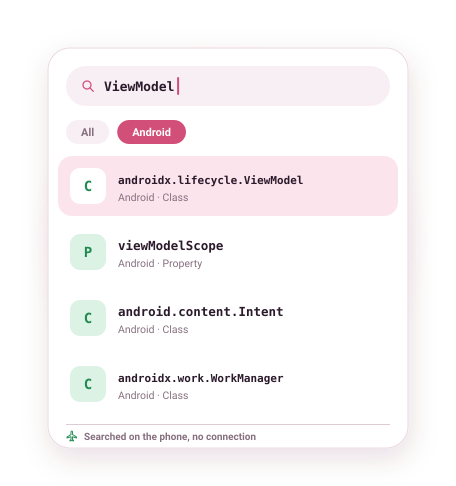

Android developer documentation, offline
The Android API reference in its Kotlin flavour, framework and AndroidX libraries together, on the device you are building for. More than 200,000 entries, searchable with no connection.

What is in the Android (Kotlin) docset
The Android (Kotlin) docset is the developer reference for the Android framework and the AndroidX libraries (Lifecycle, Room, WorkManager, RecyclerView, Compose and the rest), with signatures shown in Kotlin. Classes are listed by their fully qualified names, so androidx.lifecycle.ViewModel and androidx.lifecycle.AndroidViewModel are easy to tell apart.
It is the largest docset most people install: about 299 MB compressed and over 200,000 entries. Downloads run in the background, survive closing the app and resume if the connection drops. Use the "Download over Wi-Fi only" setting if you are on mobile data.
- Version
- Current feed build
- Entries
- 200,572
- Download
- 299 MB
- Source
- Official docset feed (Android, Kotlin reference)

Example entries you can search offline
A few real entries from the Android (Kotlin) docset's index, as they appear in search results:
| Entry | Type |
|---|---|
| android.content.Intent | Class |
| android.content.Context | Class |
| android.app.Activity | Class |
| androidx.activity.ComponentActivity | Class |
| androidx.lifecycle.ViewModel | Class |
| androidx.recyclerview.widget.RecyclerView | Class |
| androidx.work.WorkManager | Class |
| androidx.room.RoomDatabase | Class |
| androidx.compose.ui.Modifier | Interface |
| viewModelScope | Property |
How to get the Android (Kotlin) documentation offline
- Install DevDocs from Google Play. It is free and needs no account.
- Open the Store tab and search for Android (Kotlin).
- Tap Download. The docset downloads in the background (299 MB compressed) and is indexed on your phone.
- Open Search or the docset in your Library. From now on it works with no connection.
Tips for searching the Android (Kotlin) docs
- Search the class name you remember (
WorkManager), then pick the fully qualified result. - Methods and properties are separate entries, so
viewModelScopefinds the extension property directly. - Check free space first: DevDocs shows how much storage each docset uses and how much is left on the device.
Related docsets
Also in the DevDocs Store: Kotlin, Java, Gradle DSL, Gradle User Guide, Flutter. Install any of them and one search covers them all. See also: Kotlin documentation offline and Java documentation offline.
Android (Kotlin) docs offline: questions
Is this the same as the Android developer reference online?
How much space does it need?
Does it work in Android Studio?
More answers in the DevDocs FAQ.
Other documentation you can keep offline
- Python 16,146 entries
- Kotlin 12,301 entries
- Java 59,956 entries
- JavaScript 9,447 entries
- React 1,369 entries
- Django 5,705 entries
Or browse all 806 docsets by category.
Get the Android (Kotlin) docs on your phone
DevDocs is free, has no ads and needs no account.